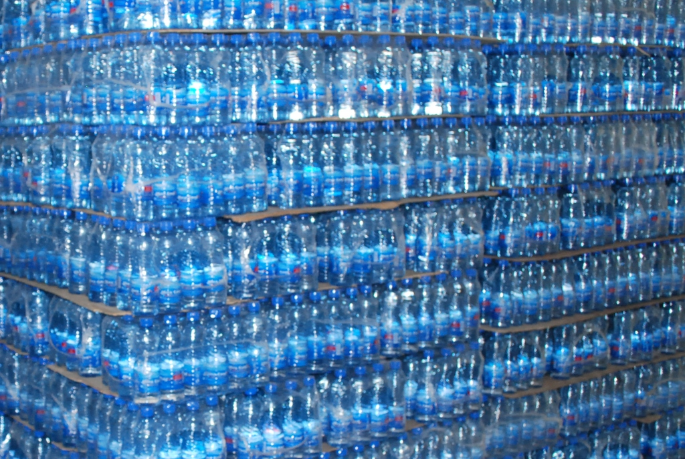
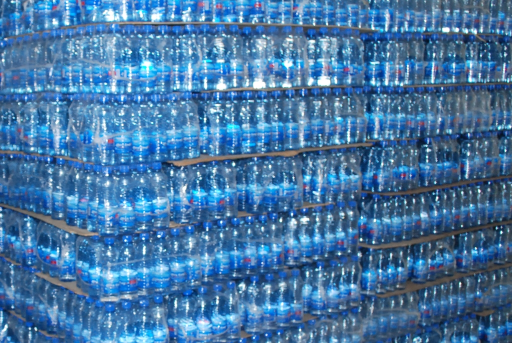

HI-PRAISE Table Water is a water bottling Company Located in the heart of Warri, Delta State, Nigeria.
HI-PRAISE Table Water is a progressive company that manufactures and distribute bottled drinking water and is among the front runners when it comes to top quality bottled and sachet water manufacturing in the country. The company continues to utilize emerging technology to develop new, innovative drinking water products and is committed to producing to the highest quality. Utilizing state of the art purification, filtration and disinfection technologies, we produce safe and refreshing products with the best packaging options available.
HI-PRAISE Table Water's state of the art bottling facility was designed to protect the purity of water at every step of the production process. HI-PRAISE has been selling packaged water in Nigeria since 2004 and has many satisfied customers in the nation. Our goal is to provide individuals and companies in need of clean water solutions with products to help improve their well-being
 

Our bottles are made of PET (polyethylene terephthalate), waste from production is recycled to reuse the material in non-food manufacturing industries out of which they are made, and to reduce the amount of waste going to landfills.
As a producer and supplier of bottled water to many of the nation’s leading grocery retailers, HI-PRAISE Table Water has built business based on reputation of a good quality over the years and we aim to strive for nothing but the best.
It is our responsibility to provide our customers with quality they can trust and innovative products to satisfy their needs.
Drinking water is known as portable water or improved drinking water, it is water that is safe to drink or use for food preparations, without risk of health problems. Globally, 1.8 billion People still use an unsafe drinking water source which may result in infections.
Water requires various types of treatment before use, and the extent of treatment depends on the source of the water. At HI-PRAISE, appropriate technologies are put in place to ensure that the best quality water is achieved.
HI-PRAISE Table Water,
20 Ejukolemu Street, Off Water Resources Road, Effurun Delta State,
Nigeria.
+2348023250432
+2348023250421